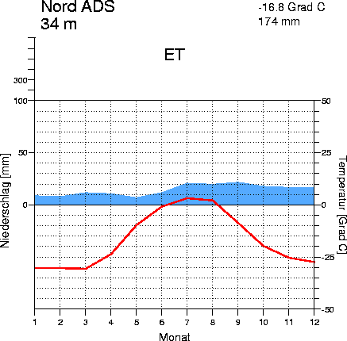
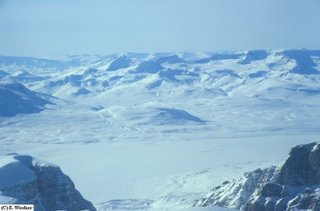

Ik heb poolklimaat gekozen omdat daar niet veel mensen leven maar het toch nog wel belangrijk is. Meestal ligt daar eeuwige sneeuw maar soms ook net niet. Dan zit het een beetje tussen een Toendra Klimaat en een PoolKlimaat in. Monat = maand en niederschlag = neerslag. De rode lijn zijn de temperaturen en het blauwe de neerslag.
 \